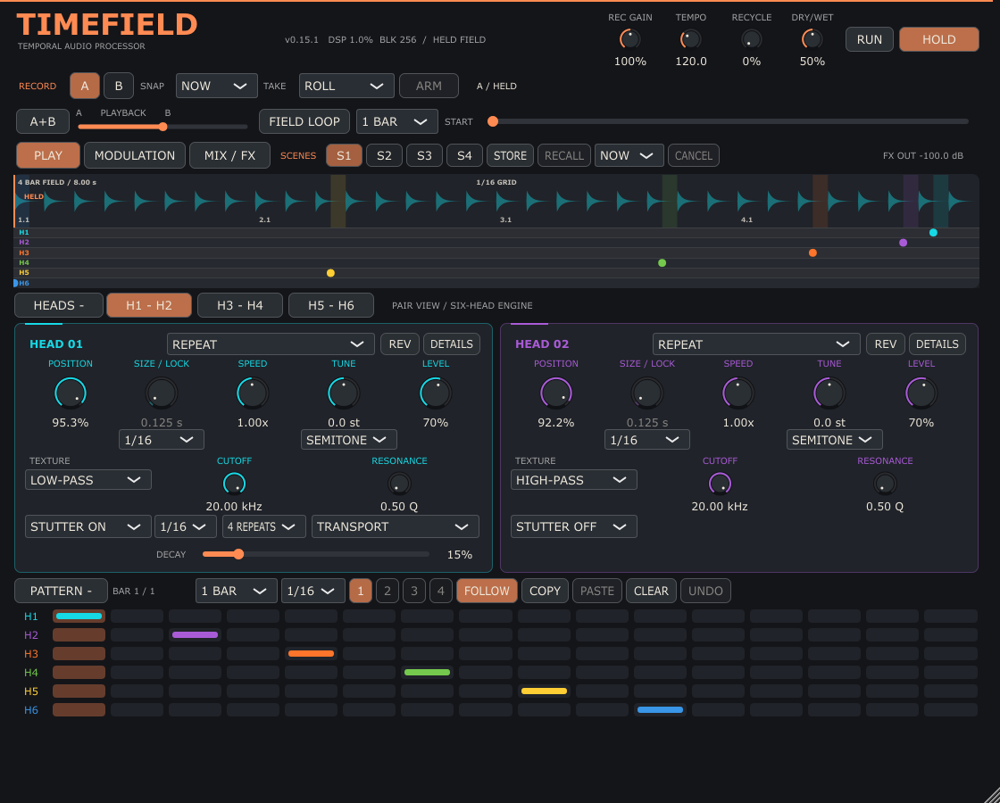

01 / Temporal instrument
TimeField
0.15.1 / WINDOWS X64 VST3 · BUILD: OCTOBER 10, 2026

Record a four-bar field and reshape it with six playback heads. Explore the PLAY, MODULATION and MIX / FX workspaces.
ZIP includes the complete TimeField.vst3 folder and a README with installation and usage instructions. Requires a music program that supports VST3 effects.
About TimeField ⟶